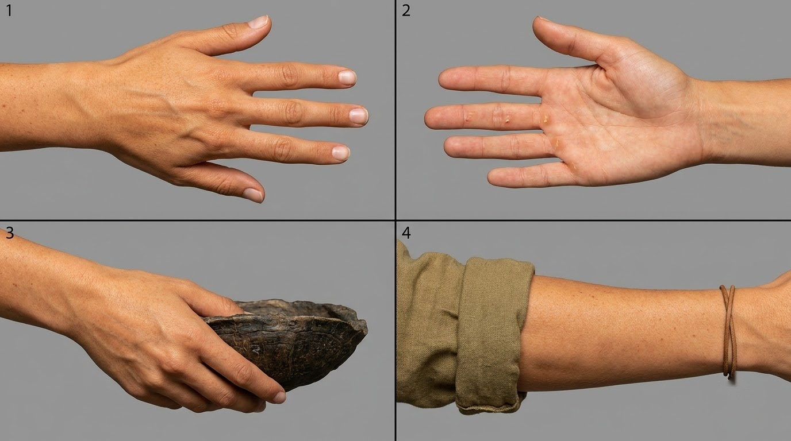
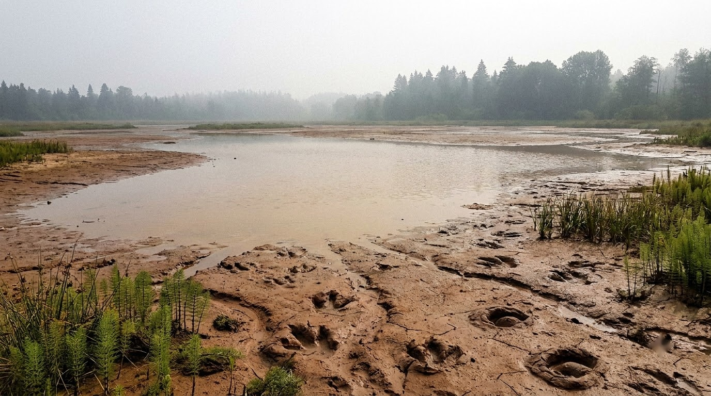
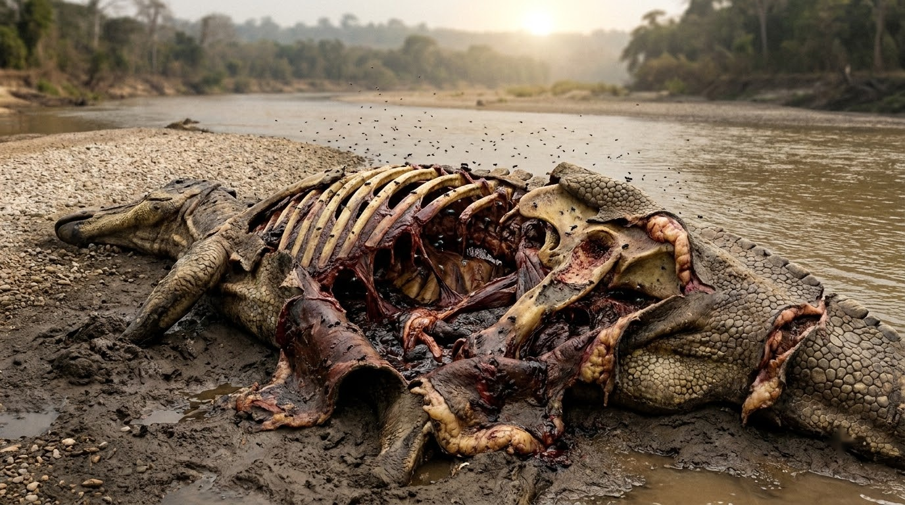

Hell Creek 66 Ma — Bảng Duyệt Reference Assets & AI Self-Review
1. Sinh Vật Kỷ Phấn Trắng Nâng Cấp Chuẩn 16:9 Turnaround Sheet (Rule 58 & 57)
3 Assets Mới

Rule 58 Turnaround
Watermark Scrubbed
Horn Asymmetry Locked
Bò Đực — Triceratops prorsus (Alpha Bull • 9 Tấn)
Bản Turnaround Sheet 16:9 chuẩn 3 panel trong 1 ảnh studio bảo tàng: khóa cứng bất đối xứng sừng giác đấu (Sừng Trái cụt 30cm xơ hóa keratin vs Sừng Phải dài nhọn 100cm).
- Panel 1 (3/4 Trái): Thân hình 9 tấn, diềm sọ gai epoccipital, sừng trán trái gãy cụt lộ vết gãy cùn nứt nẻ.
- Panel 2 (3/4 Phải): Sừng trán phải vươn dài nhọn hoắt 100cm nguyên vẹn, sẹo móng vuốt trên vai.
- Panel 3 (Cận cảnh sọ): Sừng mũi dẹt sắc bén, mõm chim mỏ sừng khô khốc, ánh mắt bảo vệ bầy hung dữ. Tuyệt đối không khói thở.
Media UUID Sạch: cab5ec79-af18-4d26-9e5e-278a8b0595bf

Rule 58 Turnaround
Watermark Scrubbed
Juvenile Proportions Locked
Con Non — Sub-adult Triceratops (Bê Cà Phơ • 2.5 Tấn)
Bản Turnaround Sheet 16:9 3 panel: thể hiện tỷ lệ sinh học con non, sừng nhú ngắn chưa phát triển, diềm xương lượn sóng tròn, da mịn không sẹo.
- Panel 1 & 2 (3/4 Hai Phía): Khung xương gọn 2.5 tấn, chân ngắn mập mạp, sừng trán nhú 10cm chếch thẳng, sừng mũi nhỏ như u xương.
- Panel 3 (Cận cảnh): Mắt to tròn mở lớn, biểu cảm hiếu kỳ ngơ ngác, vảy da mịn màu đất nhạt, mũi khô không khói.
Media UUID Sạch: 9311fac7-6e45-4e67-9205-6ae818a13299

Rule 58 Turnaround
Watermark Scrubbed
Apex Predator Locked
T. rex — Tyrannosaurus rex (Apex Predator • 8 Tấn dài 12m)
Bản Turnaround Sheet 16:9 3 panel: khóa cứng giải phẫu thợ săn đầu bảng, hộp sọ đồ sộ, mắt nhìn trực diện hai mắt (binocular vision), vết cắn sâu trên mõm.
- Panel 1 & 2 (3/4 Hai Phía): Cơ đùi và đuôi đối trọng khổng lồ, hai chi trước 2 móng nhỏ, vảy sừng dày sẫm màu đốm ngụy trang.
- Panel 3 (Cận cảnh sọ): Thị giác săn mồi lập thể hai mắt nhìn thẳng, răng chuối nghiền xương so le, sẹo cắn đối kháng trên mép mõm phải.
Media UUID Sạch: c83b20b6-3799-4aa7-b556-29adf881c3d8
2. Nhân Vật Chính Nora (Ingredients Hierarchy • Rule 38, 39 & 46)
3 Assets

Scrubbed
Face Lock
Nora — Vlogger Face Reference (Turnaround 16:9)
Chân dung cận cảnh 4 góc (Turnaround Sheet 16:9 chuẩn): Nữ travel vlogger 23 tuổi, tóc vàng mật ong (honey-blonde) buộc đuôi ngựa cao gợn sóng, mái thưa (wispy curtain bangs) ôm trán, da trắng mịn màng không tàn nhang (strictly NO red hair, NO freckles), mắt xanh lục biếc (hazel-green).
UUID: 553d94da-0545-471e-a503-b45855b87f92

Scrubbed
Body & Outfit Lock
Nora Body — Turnaround Sheet & Outfit
Turnaround 4 góc (Front, 3/4, Profile, Closeup): Dáng đồng hồ cát, ngực đầy đặn khe sâu cổ chữ V, áo thun ôm dính bụi, sơ mi kaki buộc eo, quần cargo rêu ôm hông, ủng trekking.
UUID: 37c9c041-8eab-4a8c-847c-f09957b78a42

Scrubbed
POV Hand Lock
Nora Hand — Bàn Tay POV Vlog
Cánh tay và bàn tay nữ giới thon thả, vết xước nhẹ dính bụi bẩn rừng rậm, móng tay ngắn tự nhiên sạch sẽ, tư thế vươn ra khám phá môi trường.
UUID: e7c38ac4-a190-4bc1-942d-5c0e52f870bf
3. Bối Cảnh Địa Điểm (Environmental Cleanliness • Rule 34 & 59)
3 Assets
ScrubbedNo God Rays
Hell Creek Bank — Bờ Sông Đầm Lầy (Act 1 Open)
Bãi bồi phù sa sông uốn khúc: Cát pha sỏi và bùn đen ẩm ướt, vách sét đỏ có hốc hang tự nhiên, dương xỉ rậm rạp, thân gỗ lũa hóa thạch, sương mù tầng thấp, ánh sáng tự nhiên triệt tiêu 100% tia nắng god rays CGI.
UUID: 8652b9b3-9c05-459d-a99b-d59fd6a0df6c

Scrubbed
Hell Creek Waterhole — Vũng Nước Rừng Rậm
Vũng nước sâu trong rừng lá rộng cổ đại: Nước màu trà sẫm phản chiếu bầu trời mây tầng thấp, rêu bám bờ đá phù sa, bách đầm lầy vươn cao.
UUID: b3584e8d-534c-4d5e-8ba1-c9e96b2eb522

ScrubbedNo Tire Ruts
Hell Creek Trail — Hành Lang Thú Hoang Kỷ Phấn Trắng
Hành lang thú rừng hỗn loạn bị chà đạp bởi động vật tiền sử: Đất sét đỏ nhão nát lún sâu hàng trăm dấu chân khủng long 3 ngón ngập nước, dương xỉ gãy vụn. Triệt tiêu 100% vệt lốp xe ô tô tải và thân gỗ cưa xẻ.
UUID: 97133e49-4bbc-43d4-bc84-e6adcf56299a
4. Đạo Cụ & Hiện Trường Sinh Học (Biological Decomposition • Rule 34 & 59)
1 Asset Mới

Rule 34 Single View
Watermark Scrubbed
Bio Decomposition
Edmontosaurus Carcass — Xác Khủng Long Ăn Cỏ (Hiện Trường T. rex)
Ảnh reference 16:9 hiện trường xác khủng long Edmontosaurus 12m: trọng lượng 8 tấn lún sâu 30cm vào bùn phù sa ướt, xương sườn cong ố vàng vì nắng gió bám thịt đỏ sẫm đông kết và gân nhờn, da sừng vảy rách quăn dính bùn máu đông, rãnh cắn T. rex chữ U dập nát tủy, ruồi nhặng bu kín. Triệt tiêu hoàn toàn xương thạch cao trắng bảo tàng.
- Khóa Khung Xương Sinh Học: Lún 30cm bùn tạo gờ đùn, xương vàng ố bám cơ thịt đỏ thẫm đông kết, không phải mô hình nhựa.
- Khóa Vết Ngoạm T-rex: Rãnh răng cắn sâu sắc bén hình chữ U dập tủy xương, ruồi nhặng bu kín mép da rách.
- Khóa Nhận Diện Phân Cảnh: Neo trực tiếp vào Scenes 02, 03, 04 để chống trôi dạt hình thái xác 100%.
Media UUID Sạch: 4883a5b5-4610-40c0-acec-fc50f49454e1
Đã Khóa Toàn Bộ 10 Master Reference Assets — Sẵn Sàng Sinh 17 Start Frames
10 Master References đã được làm sạch watermark SynthID, cấp UUID sạch và liên kết vào Database. Sẵn sàng tạo batch sinh 17 ảnh Start Frame tĩnh.